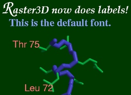

LABEL3D
SYNOPSIS
label3d is a shell script that processes a
Raster3D
input file containing label descriptors (object types 10, 11, 12)
into a TIFF image label3d.tiff containing both the
molecular graphics image and the associated labels.
label3d can accept input either from a file or from stdin.
label3d render_input_file.r3d; display label3d.tiff
or
cat list-of-files | label3d -
Unfortunately, the Raster3D render program cannot process labels.
To overcome this lack, earlier Raster3D distributions included an
auxilliary program r3dtops that
complements render in that it can process the labels but not the
graphics objects. The r3dtops code is now part of the render
program itself, and is invoked if the -labels command line
switch is present. In this case the labels are converted to PostScript
commands and placed in a file label3d.ps.
The label3d script automates the process of rendering the image,
running the resulting PostScript file through ghostscript, and then
recombining the two component images into a single TIFF image containing
both the molecular graphics objects and the associated labels.
Several intermediate files are produced by label3d:
- label3d.tmp - temporary copy of the input file
- label3d.ps - PostScript description of the labels, created by render
- label3d.ppm - PBM+ format raster image produced by ghostscript (labels but no graphics objects)
- render.tiff - TIFF image produced by render (graphics objects but no labels)
- label3d.tiff - TIFF output image combining the graphics objects and the labels.

EXAMPLE
Example 7 (figure at right) in the Raster3D distribution illustrates the use of the
label3d script.
The example script actually produces a
stereo pair that shows labels
positioned in three dimensions.
ENVIRONMENT
This script requires TIFF support in render, the unix utility sed, the
ImageMagick image processing package, and
ghostscript.
The intermediate files listed above are created each time the script is run.
Any exiting files by these names will be destroyed.
BUGS
-
The whole nature of label handling in Raster3D is not yet settled.
It would be much nicer if all the label processing were taken
care of by the render program itself.
-
The script assumes that the image is being prepared for printing
at 300 dpi (r3dtops is called with -fontscale 3.0).
-
Labels always appear on top of the molecular graphics image,
even labels which should be occluded by a foreground object.
AUTHORS
Ethan A Merritt.
 Back to top
Back to top
 Raster3D homepage
Raster3D homepage